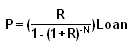

The amount due every period by a borrower to a lender under a fixed-rate loan. The fixed-rate loan payments will be equal amounts until the loan plus interest are paid in full. The payment amount can be calculated using the following formula:
Where: P is the constant payment you make every period R is the interest rate per period N is the number of periods Loan is the total loan amount
To calculate R, take the yearly interest rate and divide by the number of payment periods in a year. For example, if you pay monthly and your yearly interest is 5%, then your interest per period will be (0.05/12) = 0.004167 or 0.4167%.
To calculate N, take the duration of the loan in years and multiply it by the periods in a year. For example, if you have a 25-year loan that you pay monthly, the total periods will be 12 X 25 = 300.
Borrowers usually have the option of either a fixed-rate loan or a floating-rate loan. Some loans can even be interest-only, under which there are no required principal repayments.
{kind=link}